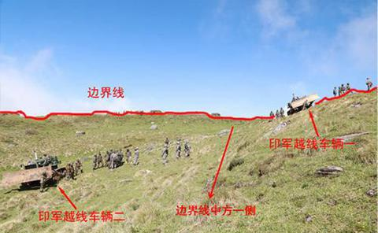

中国驻印度大使谈印军越界:首次出现如此严重事态

中国驻印度大使罗照辉接受了印度报业托拉斯采访
海外网7月5日电 7月4日，中国驻印度大使罗照辉接受了印度报业托拉斯（PTI）外事主编普利扬卡专访，就印边防部队在中印边界锡金段越界事件等回答了提问。
7月5日，印度各家权威媒体全面聚焦罗照辉在采访中的表态
印度斯坦时报以“锡金僵局：中方表态形势严峻”为题，印度昌迪加尔论坛报以“中国说：洞朗，绝不妥协”为题全文报道了中方观点。
中国驻印度大使罗照辉接受了印度报业托拉斯采访
海外网7月5日电 7月4日，中国驻印度大使罗照辉接受了印度报业托拉斯（PTI）外事主编普利扬卡专访，就印边防部队在中印边界锡金段越界事件等回答了提问。7月5日，印度各家权威媒体全面聚焦罗照辉在采访中的表态，印度斯坦时报以“锡金僵局：中方表态形势严峻”为题，印度昌迪加尔论坛报以“中国说：洞朗，绝不妥协”为题全文报道了中方观点。

洞朗地区毫无疑问属于中国领土
在回答如何看待当前洞朗地区形势时，罗大使表示，目前形势严峻，我深感担忧。这是印军首次越过已定边界，侵入中国领土，形成两军近距离对峙。至今已经过去19天了，形势仍未得到缓解。
印度无权介入中不边界谈判
中国和不丹从上世纪80年代开始边界会谈，迄今已进行了24轮会谈。两国虽未正式划界，但双方对边境地区的实际情况和边界线走向存在基本共识。对于洞朗属于中国这一点，中不双方不存在分歧。